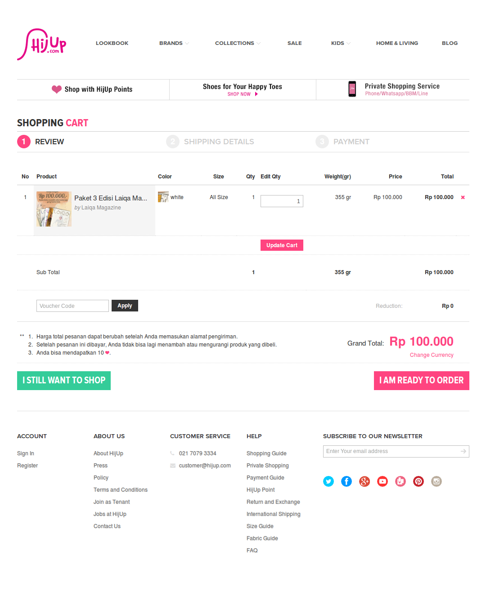

HijUp
HijUp.com is the world’s first muslim fashion e-commerce. Started back in 2011, now it has grown to host more than fifty brands and serving thousands of customers from around the world.
I am in charge of front-end development for HijUp since 2012. But as we are a small team, I am also taking care of the information architecture and crafting the user experience while not directly involved with the visual design.
In HijUp our priority is product discoverability. Second to that is displaying our products in the most appealing fashion. Finally, to seal the deal, we made the transaction process as simple as possible.
HijUp was doing a major redesign in 2013. Everything was rebuilt from scratch. My goal for this redesign was not only making something pretty, but also making it well structured and therefore easy to maintain and grow. After working for a few months I can say that I have succeed. The current HijUp is not only a joy to use, but also a joy to develop.
HijUp Product Page

HijUp Shopping Cart
